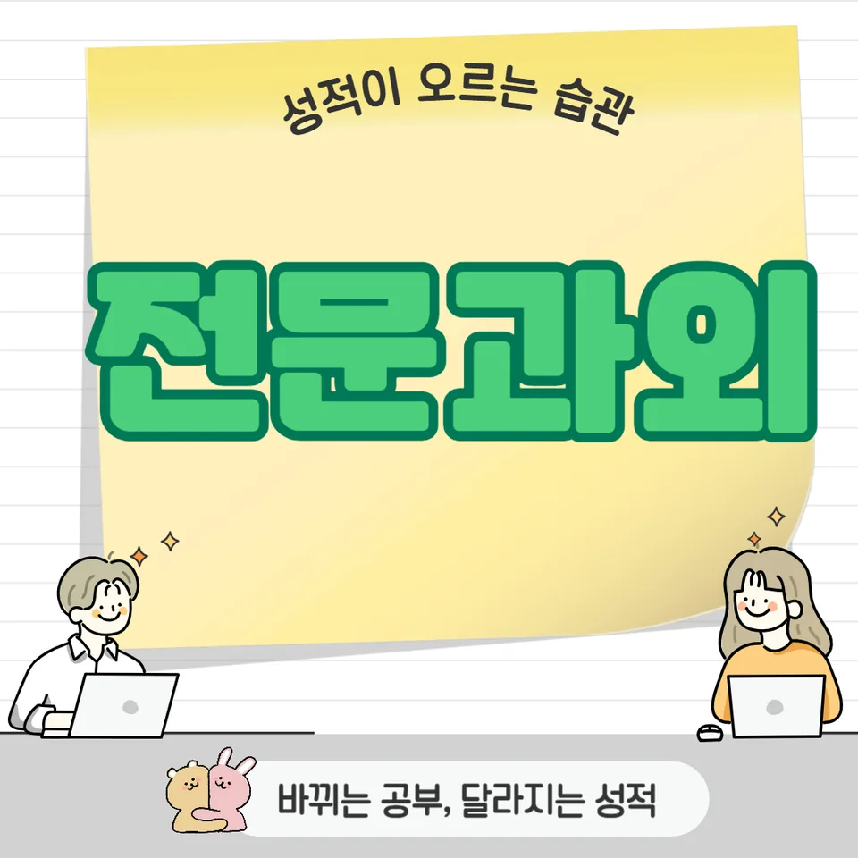

PageType : SUBJECT
URL : /경기도과외/고양시과외/덕양구과외/주교동과외/주교동수학과외/
지역 교육환경이 수학 학습에 미치는 영향
주교동수학과외를 찾는 학생들은 대체로 학교 수업을 중심으로 하루 공부의 리듬을 잡아야 합니다. 같은 시간에 학원이나 스터디를 병행하는 경우가 많아, 수업에서 다룬 개념이 가정에서 이어지지 않으면 바로 다음 단원에서 혼란이 커지곤 합니다. 주교동수학과외에서는 학교 진도와 학습 분위기를 함께 보면서, 학생이 어떤 순간에 멈칫하는지 관찰하는 방식이 중요해집니다.
또한 지역 학습 문화는 ‘문제 수’를 늘리는 쪽으로 흐르기도 합니다. 이때 학생은 겉으로는 많이 푸는 공부를 하지만, 실제로는 자신의 약점이 무엇인지 인지하지 못한 채 시간을 소진하기 쉽습니다. 그래서 주교동수학과외에서는 개념을 다시 떠올리는 과정과 오답을 분류하는 기준을 먼저 정리해, 수학 학습이 단순 반복이 아니라 이해의 연결로 이어지게 돕는 흐름을 만듭니다.
학교별 평가 방식과 학습 방향
주교동수학과외를 경험하는 학생들은 학교마다 평가 비중이 다르다는 점에서 체감이 큽니다. 내신은 단원별 서술과 계산이 섞여 나타나기도 하고, 수행평가가 있는 학교에서는 과정 기록이나 개념 설명이 점수에 영향을 주는 편입니다. 같은 문제라도 ‘정답만 맞히는 학생’과 ‘풀어가는 근거를 남기는 학생’의 성적 차이가 생길 수 있어, 학습 방향이 평가 방식에 맞춰 조정되어야 합니다.
평가가 바뀌면 공부 습관도 달라집니다. 시험 전에는 답안 작성 속도와 실수 감점 대응이 중요해지고, 수업 후에는 채점 기준에 맞는 확인 루틴이 필요해집니다. 주교동수학과외에서는 내신과 수행을 동시에 고려해, 개념 이해가 실제 시험 문장과 어떻게 연결되는지 점검하는 방식으로 수학 학습을 설계합니다.
학생들이 수학을 어려워하는 주요 원인
대부분의 학생이 수학에서 막히는 지점은 공식 자체가 아니라 ‘무엇을 먼저 이해해야 하는지’의 순서가 흐려질 때입니다. 어떤 단원에서는 조건을 해석하는 능력이, 다른 단원에서는 개념 간 관계를 떠올리는 속도가 성패를 가릅니다. 이 과정이 정리되지 않으면, 학생은 문제를 풀며 맞히다가도 다음 유형에서 다시 멈추는 반복을 겪습니다.
시간이 지나면 오답이 누적되고, 그 오답이 왜 틀렸는지 분류되지 못하면 복습은 ‘그냥 다시 푸는 일’로 바뀝니다. 이때 학습은 길어지지만 사고력은 오르지 않는 느낌을 주기 쉽습니다. 주교동수학과외에서는 학생이 실수의 원인을 구체적으로 말할 수 있도록 돕고, 오답을 단서 중심으로 재정리해 문제 해결 과정이 스스로 작동하도록 만드는 데 초점을 둡니다.
학년 변화에 따른 수학 학습의 차이
학년이 올라가면 같은 단원을 다루더라도 요구되는 깊이가 달라집니다. 중간 단계에서는 개념이 모양을 갖추는 시기라면, 상위 학년으로 갈수록 연결과 추론이 강조됩니다. 이 변화는 수업에서 바로 드러나지 않을 수 있어, 학생이 ‘이해했다’고 느낀 뒤에도 실제로는 활용 단계에서 약해지는 현상이 나타납니다.
또 시험 기간에는 학습 부담이 갑자기 커지며 공부 습관이 흔들리기 쉽습니다. 어떤 학생은 예전 방식으로 복습을 하지만, 상위 학년에서는 그 방식이 통하지 않습니다. 주교동수학과외에서는 학년 전환 시점마다 복습 주기를 재설계하고, 학생이 수학 학습의 목표를 ‘계산 정확도’에서 ‘문제 해결의 흐름’으로 옮기도록 조정합니다. 결과적으로 학습의 무게가 달라지는 시기를 미리 준비하게 됩니다.
꾸준한 학습이 실력으로 이어지는 과정
주교동수학과외가 강조하는 부분은 결과보다 과정의 안정화입니다. 학생이 수학 공부습관을 만들기 시작하면, 단원 초반의 낯섦이 점점 줄어듭니다. 짧은 시간이라도 개념 확인과 오답 점검이 반복되면, 뇌는 ‘다음에 무엇을 해야 하는지’를 학습합니다. 이때 사고력은 갑자기 생기는 능력이 아니라, 학습이 쌓이며 자동화되는 관찰로 만들어집니다.
시간을 효율적으로 쓰는 방법도 결국 유지의 문제로 귀결됩니다. 시험 직전의 몰아공부는 단기 기억을 붙일 수 있지만, 다음 단원으로 넘어가면 바로 약점이 드러납니다. 그래서 주교동수학과외에서는 주간 단위로 복습을 배치하고, 학습 계획을 꾸준히 지키는 구조를 만들어 줍니다. 학생이 ‘오늘 할 일을 끝내는 감각’을 익히면, 공부가 불안에서 관리로 바뀌어 실력으로 연결됩니다.
문제 해결력을 키우는 학습 습관
문제 해결은 정답을 찾는 능력만으로 설명되지 않습니다. 학생은 문제를 읽는 순간에 조건을 정리하고, 떠올릴 개념을 선택하며, 계산이나 추론을 진행하는 순서를 갖춰야 합니다. 이 순서가 무너지면 같은 유형을 반복해도 성장이 멈춥니다. 주교동수학과외에서는 학생이 문제를 ‘해석-선택-검증’의 흐름으로 바라보도록 훈련합니다.
오답을 다루는 방식 역시 사고력에 직접 연결됩니다. 틀린 문제를 다시 풀더라도, 왜 틀렸는지 언어로 정리하지 못하면 다음에 같은 실수를 반복할 가능성이 큽니다. 그래서 오답 분석은 ‘번호 지우기’가 아니라 ‘원인 라벨’을 붙이는 활동으로 설계됩니다. 학생이 문제 해결 과정을 설명할 수 있게 되면, 복습이 단순 반복에서 이해의 점검으로 바뀌며 사고력 성장의 체감이 커집니다.
복습과 학습 관리가 중요한 이유
복습은 시간을 더 쓰는 일이 아니라, 학습의 빈칸을 확인하는 과정입니다. 학생이 개념을 처음 배웠을 때는 이해의 느낌이 강하게 남지만, 며칠이 지나면 그 느낌이 희미해집니다. 이 시점에 짧게라도 복습이 들어가면, 잊기 전에 연결 고리가 다시 연결됩니다. 주교동수학과외에서는 복습을 ‘량’보다 ‘타이밍’과 ‘목표’로 관리하도록 돕습니다.
학습 관리가 필요한 이유는 가정과 학교에서 나타나는 학습 환경 차이 때문입니다. 수업 시간에는 집중이 유지되지만, 집에서는 피로도와 습관이 영향을 줍니다. 학부모는 흔히 ‘공부는 하는데 왜 불안해 보일까’라는 고민을 하게 됩니다. 이때는 공부 시간 자체보다 학습 계획의 일관성이 중요해집니다. 시험 기간에는 특히 학습 패턴이 급격히 변하므로, 복습과 오답 정리를 미리 설계해 흔들림을 줄여야 합니다.
수학 학습에서 확인해야 할 핵심 요소
주교동수학과외에서 점검하는 핵심은 학생이 스스로 학습 흐름을 움직일 수 있는지 여부입니다. 개념을 이해하고 활용하는 과정이 이어지는지, 문제 해결력이 자라나는지, 그리고 복습이 실제 성과로 연결되는지 확인합니다. 여기서 중요한 것은 단순히 문제를 많이 푸는 태도가 아니라, 학습 과정에서 무엇을 체크하는지에 대한 루틴입니다.
- 학교 수업과 시험 범위에 맞는 학습 계획을 세우고 있는지 확인합니다.
- 개념을 이해하는 데서 멈추지 않고 문제 해결 과정에 활용하고 있는지 점검합니다.
- 틀린 문제를 다시 풀어보며 실수의 원인을 꾸준히 분석합니다.
- 단기 성과보다 지속적인 복습과 공부습관을 유지하고 있는지 살펴봅니다.
학생마다 성장 속도는 다르지만, 반복되는 질문은 비슷합니다. 같은 단원에서 왜 다시 막히는지, 오답이 왜 반복되는지, 복습이 왜 효과를 못 내는지 같은 지점들이 드러납니다. 주교동수학과외에서는 교육 현장에서 흔히 관찰되는 이러한 변화들을 바탕으로 자기주도학습이 자리 잡는 과정을 함께 다듬습니다. 학습과정의 핵심 요소가 정리되면, 학생은 시험 전에도 흔들리지 않는 사고력과 문제 해결 감각을 유지할 수 있습니다.
자주 묻는 질문
수학 학습은 언제부터 체계적으로 준비하는 것이 좋을까요?
개념이 쌓이는 속도를 기준으로 잡는 것이 좋습니다. 주기적으로 복습이 들어갈 수 있도록 단원 초반부터 작은 점검을 시작하면, 중간에 갑자기 어려움이 몰리는 상황을 줄일 수 있습니다.
학교 내신과 수행평가는 어떻게 함께 준비하면 좋을까요?
채점에서 보는 요소를 기준으로 공부 항목을 나누어 관리하는 방식이 유리합니다. 계산 정확도뿐 아니라 과정 표현, 설명 방식까지 확인하면서 수학 학습을 설계하면 내신과 수행평가 준비가 한 방향으로 정리됩니다.
수학 개념이 부족한 학생도 학습 흐름을 따라갈 수 있을까요?
가능합니다. 다만 단원을 통째로 따라가기보다, 현재 막힌 개념을 먼저 복원한 뒤 다음 단계의 활용을 연결해야 합니다. 주교동수학과외에서는 이 순서를 점검하며 학생이 학습 흐름을 놓치지 않게 돕습니다.
문제 해결력은 어떤 과정을 통해 향상될 수 있을까요?
문제를 읽고 조건을 정리한 다음, 어떤 개념을 선택해 검증하는 흐름이 반복될 때 길러집니다. 오답 분석이 함께 들어가면 사고력이 단단해지고 문제 해결 감각이 누적됩니다.
꾸준한 학습 습관은 어떻게 만들어갈 수 있을까요?
처음부터 오래 하기보다, 매일 또는 매주 짧게 끝나는 루틴을 설계해야 합니다. 복습과 오답 정리를 계획에 넣고, 시험 기간에도 흔들리지 않도록 준비한 패턴을 유지하면 공부습관과 자기주도학습이 자리 잡습니다. 주교동수학과외에서도 학습 계획을 꾸준히 유지하는 과정을 함께 다듬는 편입니다.
